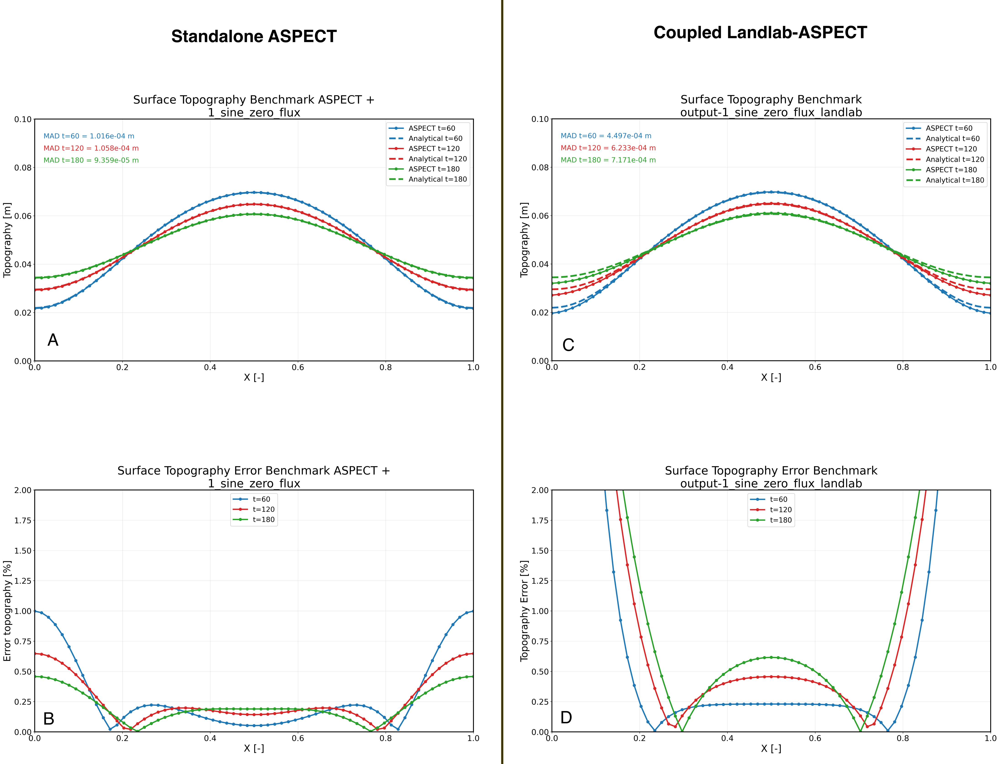

Benchmark Recreation: ASPECT diffusion_of_hill Using Landlab
Description
This benchmark recreates the existing ASPECT diffusion_of_hill benchmark
using the Landlab mesh deformation plugin and compares the resulting
topography evolution against the analytical solution provided by ASPECT.
The benchmark serves as a verification case for the Landlab–ASPECT coupling framework and provides a reproducible workflow for evaluating whether Landlab-driven surface diffusion reproduces the expected analytical diffusion behavior.
Added Files
The following files were added:
1_sine_zero_flux_landlab.prm1_shine_zero_flux_landlab_import-template.pyplotter_Landlab_ASPECT_benchmark_diffusion_hill.py
Purpose
The purpose of this benchmark is to reproduce the standalone ASPECT diffusion benchmark located in:
benchmarks/diffusion_of_hill
using the Landlab mesh deformation plugin and compare the resulting topography evolution against the analytical solution already provided by ASPECT.
This benchmark provides an important verification test for the Landlab–ASPECT coupling framework and helps assess whether the coupled implementation reproduces the expected diffusion behavior observed in the standalone ASPECT benchmark.
Implementation
PRM File Modifications
The original ASPECT benchmark uses the built-in diffusion mesh deformation model:
Mesh deformation boundary indicators = top: diffusion
In the recreated benchmark, this is replaced by the Landlab mesh deformation plugin:
Mesh deformation boundary indicators = top: Landlab
The Landlab plugin is configured through:
subsection Landlab
set MPI ranks for Landlab = 1
set Script name = 1_shine_zero_flux_landlab_import-template
end
The initial sinusoidal hill topography, which is defined in the original benchmark through:
Geometry model
subsection Initial topography model
is instead generated entirely within the Landlab script so that the surface evolution is controlled exclusively by Landlab.
To facilitate verification against the analytical solution, the benchmark enables output of both numerical and analytical topography fields:
subsection Postprocess
set List of postprocessors = analytical topography, topography
end
Landlab Implementation
The import-template performs the following steps:
Creates a
RasterModelGridmatching the ASPECT surface discretization.Initializes the sinusoidal hill using:
z = A * np.sin(np.pi * x / L)
where:
A = 0.075 L = 1.0
Applies closed boundary conditions on all grid edges.
Evolves the surface using Landlab’s
LinearDiffusercomponent.Uses substepping (
n_substeps = 10) during each ASPECT timestep.Returns the resulting erosion/deposition field to ASPECT through the Landlab–ASPECT coupling interface.
Benchmark Plotting Utility
The plotting script
plotter_Landlab_ASPECT_benchmark_diffusion_hill.py
was developed to:
Compare Landlab–ASPECT topography with the analytical solution.
Compare the coupled benchmark against the standalone ASPECT benchmark.
Compute Mean Absolute Difference (MAD).
Compute percentage error.
Generate benchmark-quality figures suitable for documentation and verification studies.
Verification
The benchmark was executed locally and compared against the analytical solution supplied with the original ASPECT benchmark.
The verification workflow compares:
Standalone ASPECT benchmark results.
Coupled Landlab–ASPECT benchmark results.
Analytical solution.
The resulting figures provide a direct assessment of the accuracy of the Landlab mesh deformation implementation and its ability to reproduce the expected diffusion-driven evolution of a sinusoidal hill.

Results
Figure A–D compares the original standalone ASPECT implementation of the
diffusion_of_hill benchmark with the recreated Landlab–ASPECT benchmark
using the Landlab mesh deformation plugin.
Topography Evolution
The upper panels (A and C) show the surface topography profiles at \(t = 60\), \(120\), and \(180\) together with the analytical solution.
Several observations can be made:
The Landlab–ASPECT solution reproduces the overall evolution of the diffusing sinusoidal hill very well.
The amplitude reduction through time closely follows the analytical solution.
The shape of the hill remains nearly identical to both the standalone ASPECT benchmark and the analytical prediction.
Mean Absolute Difference (MAD) values remain small throughout the simulation.
For the standalone ASPECT benchmark:
MAD (\(t=60\)) = \(1.02 \times 10^{-4}\) m
MAD (\(t=120\)) = \(1.06 \times 10^{-4}\) m
MAD (\(t=180\)) = \(9.36 \times 10^{-5}\) m
For the coupled Landlab–ASPECT benchmark:
MAD (\(t=60\)) = \(4.50 \times 10^{-4}\) m
MAD (\(t=120\)) = \(6.23 \times 10^{-4}\) m
MAD (\(t=180\)) = \(7.17 \times 10^{-4}\) m
Although the coupled solution exhibits larger errors than the standalone implementation, the differences remain small relative to the total topographic amplitude (\(\sim 0.06-0.07\) m). The benchmark therefore demonstrates that the Landlab diffusion implementation reproduces the expected analytical diffusion behavior with good accuracy.
Error Distribution
The lower panels (B and D) show the percentage error relative to the analytical solution.
For the standalone ASPECT benchmark:
Errors remain below approximately 1%.
The largest errors occur near the domain boundaries.
The interior domain exhibits very small errors.
For the coupled Landlab–ASPECT benchmark:
Errors are again concentrated near the domain boundaries.
The central portion of the domain exhibits relatively uniform errors of approximately 0.2–0.6%.
Boundary errors increase rapidly toward both edges and are noticeably larger than those observed in the standalone benchmark.
The location of the maximum error suggests that the dominant discrepancy is associated with boundary treatment rather than the diffusion process itself.
Discussion
The excellent agreement in the interior domain indicates that the Landlab
LinearDiffuser implementation is correctly reproducing the analytical
diffusion solution and that the ASPECT–Landlab coupling framework is
transferring surface evolution information consistently.
However, systematic differences remain near the left and right boundaries. Several possible explanations exist:
Boundary-condition implementation differences
The original ASPECT benchmark applies zero-flux boundary conditions through ASPECT’s native diffusion mesh deformation model, whereas the coupled benchmark imposes boundary conditions through Landlab’s grid framework.
Although both approaches are intended to represent zero-flux boundaries, the numerical implementation may not be identical.
Ghost-node treatment
The coupled framework introduces ghost-node handling and boundary operations that are not present in the standalone ASPECT benchmark. Small differences in the calculation of boundary gradients could influence the solution near the domain edges.
Projection or interpolation effects
Surface elevations are exchanged between ASPECT and Landlab during the coupling procedure. Any interpolation, projection, or mapping operation performed near the domain boundaries may introduce additional numerical errors.
Coupling-specific discretization effects
The Landlab–ASPECT workflow involves additional numerical operations compared to the standalone benchmark. These operations may have a larger influence at domain boundaries where fewer neighboring nodes are available.
Note
At present, the exact source of the boundary discrepancy has not been conclusively identified. Further investigation is required to determine whether the observed differences originate from boundary-condition implementation, ghost-node handling, surface projection between ASPECT and Landlab, or a combination of these factors.
Conclusion
The recreated Landlab–ASPECT version of the diffusion_of_hill
benchmark successfully reproduces the analytical diffusion solution and
closely matches the behavior of the original standalone ASPECT benchmark.
The main findings are:
The coupled solution captures the expected diffusion-driven decay of the sinusoidal hill.
Topography profiles show excellent agreement with the analytical solution throughout most of the domain.
Mean absolute differences remain small during the entire simulation.
The primary discrepancies are localized near the domain boundaries.
The origin of these boundary errors remains an open question and requires further investigation.
Overall, this benchmark provides strong verification that the Landlab mesh deformation plugin correctly reproduces surface diffusion behavior within the ASPECT–Landlab coupling framework while also identifying boundary treatment as an important area for future development and validation.